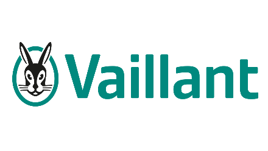

Who Montisoro is,
what we do
and why.
One complete reference document on the origin, mission, approach, services, technology, team and clients of Montisoro — designed to give the full picture in one read.
The full picture,
in one dossier.
This document brings together everything needed to understand Montisoro: where the company comes from, what it does, how it works, with what technology, for which market, and with which people and clients.
Montisoro makes care workable
and capability scalable.
Montisoro is a Belgian company that helps organisations tackle absence and sustainable employability structurally — by bringing human expertise, clear governance and proprietary technology together in one system.
“Care is not a feeling.
It is a Capability.”
Montisoro's mission · Re-integrate What Matters
The premise: people rarely drop out from illness alone — they also drop out on connection, safety and perspective. And absence does not recur because no one acts, but because no one sees everything. The answer is not more effort, but a system that sees earlier, acts better and anchors knowledge.
Source of figures: aggregated practice data from Montisoro cases. Substantiation and methodology on request.
19 years of commitment.
Five months of silence.
Some companies are born from an opportunity. Montisoro was born from a conviction. What began as personal absence became the design principle of an organisation — four moments.
Silence
Five months of silence. No guidance. No real landing after 19 years of commitment.
Powerlessness
Her manager wanted to do more. He did not know how. Not from unwillingness — but because the role was missing.
Insight
“People rarely drop out from illness alone. They also drop out on connection, safety and perspective.”
Montisoro
That role was missing — in too many organisations. So Laurence decided to build it herself.
What began as personal absence became the design principle of an organisation.
Laurence Van den Bergh · Founder & CEO
Absence is not the problem.
It is the signal.
In most organisations everyone does something — and it still gets stuck. Not from a lack of effort, but from a lack of system.
HR follows up. Managers try to stay involved. Prevention services do their part. Employees wait for clarity. But no one sees everything. Absence touches people, teams, planning, legislation, communication, trust and results all at once. Once that information is scattered across mailboxes, spreadsheets and loose conversations, the organisation loses its grip.
- Cases only become visible once already complex.
- Signals are scattered across mail, spreadsheets and notes.
- HR spends too much time searching and interpreting.
- Managers are unsure what they may say or ask.
- Return to work does not follow one approach.
- GDPR and documentation feel vulnerable.
- Insufficient view of recurring patterns.
- Knowledge is lost when roles change.
- Alignment costs effort again every time.
- Compliance risks are not always seen in time.
The point: recognising three or more is no coincidence — it is a pattern. More meetings will not solve it. A system will.
Reintegrate What Matters.
Two meanings, one phrase. Bring people back. And restore what organisations lost: connection, safety, perspective.
Montisoro builds the knowledge, structure and technology with which organisations see earlier what is breaking down, act better when it gets complex and anchor knowledge more sustainably — so that care and performance become one system.
Visibility
We make visible what others miss. Even when that is uncomfortable. Especially then.
Ownership
We measure our success not by your dependence, but by your independence.
Connection
Technology structures. People connect. Never the other way around.
Honesty
AI supports. Our experts stay accountable. Always critical. Always explainable.
Trust
Earned through results. Kept through transparency.
Not one person.
An intelligent system.
Trust is not a soft skill — it is infrastructure. Four movements carry that system: make visible, set roles sharply, support intelligently and build capability.
Human Reintegration
Neutral direction between employee, HR, manager and occupational medicine. The role that is missing in too many organisations.
Compliance & Governance
Well-being law, labour law, GDPR and compliance translated into practice — workable agreements, not theory.
Capability Building
Clear roles, internal capacity and sustainable process discipline. Knowledge stays in the organisation, not with the consultant.
Technology & Agentic AI
Storm and Casey AI make care scalable and capability steerable. Human where it must be, structured where it counts.
How the question changes: once absence becomes visible in euros, time and impact, the question shifts from “how do we follow up cases better?” to “how do we build an organisation that sees earlier, acts better and loses less?”. That is where the Montisoro approach begins.
From first conversation
to lasting capability.
Montisoro works with clear, fixed scopes — no open ends. An engagement always starts with a no-obligation diagnostic conversation and ends with capacity that stays in the organisation.
Diagnosis
No-obligation 30–45 min conversation, online or on site. We listen and sketch where the biggest levers lie.
Proposal
Concrete proposal with fixed scope and expected payback, substantiated with your own absence figures.
Engagement
Implementation of direction, governance and — where needed — the Storm platform. Humanly guided, structurally executed.
Capability
Anchor knowledge, roles and discipline in the organisation so the approach does not stay person-dependent.
How does a first conversation go?
A no-obligation diagnostic conversation of 30 to 45 minutes. You bring your situation, we listen and sketch the biggest levers. No presentation, no sales pressure.
What does an engagement cost?
Depends on scale and ambition. Clear, fixed scopes. After the first conversation you receive a proposal with expected payback.
How fast do we see results?
First insights within weeks. A structural decline usually follows within one to two quarters, as the system gains grip.
Does this work for our sector or SME?
Yes. The method is sector-agnostic and scales from SME to large organisation. What differs is the context, not the system.
Four questions.
One strategic route.
Not every absence approach fits every organisation. The online fit check moves a situation through four dimensions to one of six routes within the Montisoro framework — in under two minutes, no black box.
Answers
Four short questions about your situation.
Scoring
Four dimensions are weighted.
Route
The best-fitting route surfaces.
Insight
Personal insight by email.
Human Reintegration
Neutral direction on individual cases and return to work.
Capability Building
Build internal roles, capacity and process discipline.
Operating System
The Storm platform as operational backbone.
Strategy & Governance
Anchor policy, roles and compliance strategically.
Culture of Care & Capability
Let behaviour and culture evolve with the approach.
Exploratory Direction
An exploratory track when the direction is still open.
What the check analyses: four dimensions together give one strategic picture — not a scorecard, but a starting point for the conversation with leadership, HR or occupational medicine.
What absence really costs.
Absence costs more than time off: capacity, planning, team energy, knowledge, speed and continuity. The online ROI calculator gives a first indication — not to capture everything exactly, but to make visible what is often underestimated.
In six guided steps — organisation, gross salary, recurring costs, replacement costs, organisational impact and absence profile — the calculator computes two cost concepts: the employer cost (the invoiceable cost) and the total cost (including the non-invoiced organisational impact). The result appears as a print-ready absence report, with a benchmark against the Belgian sector average, a risk level, savings scenarios and concrete priorities.
“A first indication. Often enough to start the right conversation.”
A full technical explanation is in the “Calculator Documentation”.
Technology only works when
behaviour evolves with it.
Software does not change organisations. Behaviour does. That is why Montisoro combines technology with five behavioural layers that make the approach structural rather than person-dependent.
Capability Building
So knowledge, follow-up and expertise stay in the organisation — not leave with the consultant.
Leadership
So managers grow stronger in conversations, follow-up and support. Not harder. Better.
Psychological safety
So signals are discussed sooner and problems become visible earlier. No taboo around workability.
Governance & role clarity
So responsibilities, decisions and communication stay clear — even in complex cases.
Process discipline
So follow-up does not depend on goodwill or chance. It hangs on structure, not on individuals.
The core: technology without capability creates dependence. Capability with technology creates scalable organisational strength.
The operating system behind
sustainable work.
Storm is Montisoro's SaaS platform since 2023. It structures everything that today sits scattered across mailboxes, spreadsheets, loose conversations and individual knowledge — not as an administrative layer, but as operational intelligence.
GDPR compliant
In line with European privacy law. Data minimisation built in, not bolted on.
Role-based
Who sees and may do what strictly follows the role within the case.
2FA secured
Two-factor authentication as standard. Access is a decision.
Enterprise-ready
SSO, audit logs, custom roles and integrations. From day one.
Active today
Active within several corporate organisations. Not a pilot — production.
EU cloud-hosted
Fully hosted within European cloud. Data does not leave the continent.
Not a chatbot. The
contextual intelligence layer.
Casey combines years of practical experience, a proprietary methodology and an Agentic AI framework into one intelligent system that learns from your context, supports where needed and grows with your organisation — always with the human at the wheel.
Case managers
Sharper preparation and more consistent case handling.
HR
More overview, stronger documentation and less knowledge loss.
Managers
More confidence in conversations and follow-up on the floor.
Prevention
Better insight into patterns, signals and workability.
Organisation
More grip on risk, capacity and sustainable employability.
Casey doesn't think in tickets — but in context, behaviour and continuity.
AI without context creates noise.
That is why human expertise stays essential in every decision. Human in the Loop is not a feature — it is architecture. From September 2026, pilot programmes start with a select group of early adopters who help shape how Casey evolves.
No passive theory.
Built for scale.
Montisoro is proven in practice and built for organisations that want to move forward — from the first day of absence to sustainable return to work.
Those results come not from a single intervention, but from the interplay of neutral direction, clear governance, capability building and technology. The effect is measurable on three levels at once: shorter absence duration, lower cost and less knowledge loss at role changes.
Transparency (important): the figures above are based on aggregated practice data from Montisoro cases. Measurement period, definition and calculation are available on request; a separate methodology substantiation is in preparation. Figures are deliberately not stated more strongly than they can be substantiated.
Proven at corporates.
Montisoro works today with large, well-known organisations on absence, guidance and sustainable return to work. Verified references are available on request.



The collaboration always centres on the same: absence, guidance and sustainable return to work. The roles working with Montisoro — from HR leadership and prevention advisors to operations and people management — show that the approach connects at multiple levels of an organisation.
Client quotes: literal quotes and published cases will be added once written consent from the organisations involved is available. Until then: verified reference on request.
The people behind the capability.
Workable work does not integrate itself. It needs people who dare to look, analyse sharply, act rightly and use technology wisely — a team of strategy, case management and engineering.
Laurence Van den Bergh
Policy-strong, analytical and tech-savvy with grit. Brings strategic insight, legal sharpness and lived experience together to make absence policy more human and more effective.
Jeroen
Builds the technological backbone. Translates methodology into working systems — from architecture to Casey AI. Where complexity threatens to stall, he keeps it moving.
Glenn
Connects strategy, market and client needs with scalable growth. 10+ years in digital solutions and business development. Sharp, pragmatic, impact-driven.
Reza
Translates Montisoro's identity into everything you see, read and feel — from digital design to client material, from campaign to strategy.
Amr
Designs and develops the intelligence behind Casey AI. Translates vision and practical knowledge into advanced Agentic AI frameworks that learn, reason and act.
Ahmed
Responsible for the build, security, monitoring and scalability of the AWS cloud infrastructure of Storm and Casey AI.
Non-clinical case managers.
The case managers bring structure, calm and humanity to absence trajectories — from first follow-up to sustainable return to work, in close cooperation with occupational medicine.
Els
Brings structure, calm and humanity to absence trajectories. Guides employees and organisations from first follow-up to sustainable return to work.
Edith
Combines experience as stress & burnout coach, career and outplacement counsellor with a warm, structured approach to reintegration.
Rico
A nurse with warmth, clinical sharpness and grit. Works closely with occupational medicine and brings a view that makes the difference on the floor.
Astrid
Occupational psychologist with solid field experience, close to both employee and organisation. Appears when it counts — and knows what is needed then.
Stefi
Experienced occupational therapist and trainer who supports organisations in implementing Culture of Care, with a focus on practical applicability and lasting behaviour change.
A growing team of experts, clinical and non-clinical, around the person and the organisation.
Where Montisoro fits.
Montisoro positions itself at the crossroads of absence policy, well-being at work and technology — a space where consultancy, software and legal expertise often operate separately.
Target market
SMEs to large organisations in Belgium where absence, workability and human complexity are daily reality. Sector-agnostic — the context differs, the system does not.
Key contacts
HR leadership, prevention advisors, managers and CFOs. The calculator and fit check are deliberately built to open that first conversation.
Distinctive
Not one person or one tool, but a system: human direction + governance + capability + technology. Knowledge stays in the organisation.
Commercial model
Diagnostic conversation → engagement with fixed scope → Storm platform → Casey AI. Proposals with expected payback, based on the client's own figures.
- Diagnostic conversations via the three contact channels.
- The online fit check as a low-threshold starting point.
- The ROI calculator that makes the cost visible.
- Casey AI pilot programme (starts September 2026).
Who Montisoro is connected to.
An honest overview of Montisoro's network — including what is (not yet) public. This document lists no relationships that are not confirmed.
Client relationships
Active collaborations with, among others, Volvo Group, Alcon, Novartis, AXA Belgium, Securitas and Vaillant Group — on absence, guidance and sustainable return to work.
Founder network
The public point of contact runs through the founder, Laurence Van den Bergh, e.g. via LinkedIn. The company is founder-led.
Investors
There is currently no publicly announced external investment. Should funding or a partnership be announced, it belongs here — not before.
Press & publications
There is not yet consolidated press coverage or a published case. Cases and articles will be added once they exist and are verified.
What is here is confirmed. What is not yet confirmed is deliberately not here.
In line with the principle: trust earned through results, kept through transparency.
The dossier in facts.
Re-integrate What Matters.
Montisoro company dossier · June 2026 edition · compiled from Montisoro's public website and project material. Figures and claims as communicated by Montisoro; substantiation on request. © 2026 Montisoro BV.